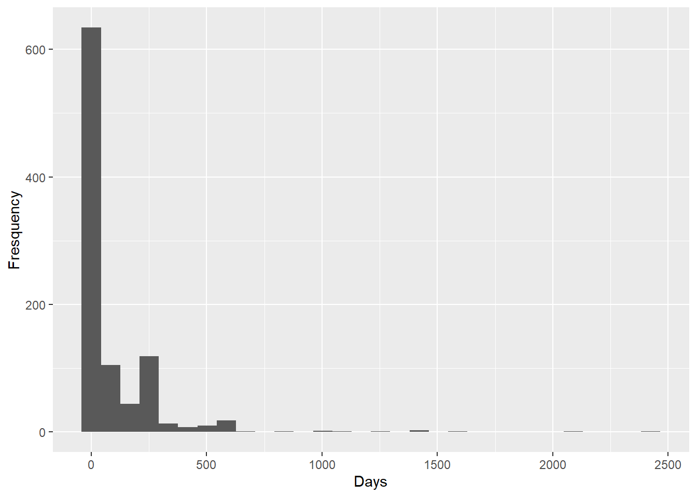
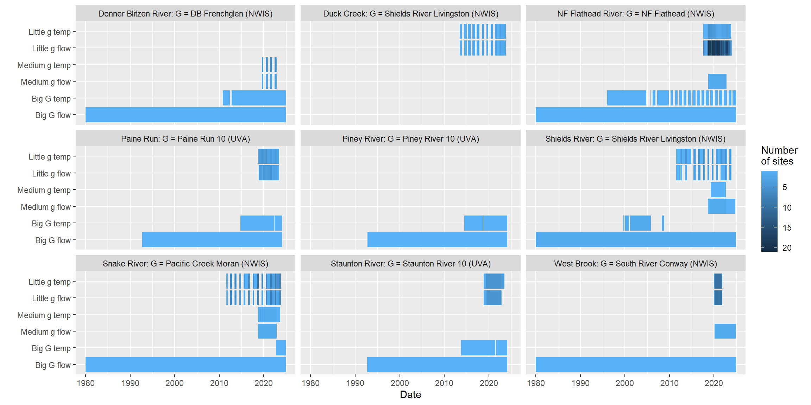

Code
library(tidyverse)
library(mapview)
library(sf)
library(zoo)
library(dataRetrieval)
library(nhdplusTools)
library(ggpubr)
library(fasstr)
library(dygraphs)
library(ggforce)
library(smwrBase)
library(shiny)Purpose: Collate EcoDrought streamflow and temperature data, povided by EcoD PIs/partners and NWIS
library(tidyverse)
library(mapview)
library(sf)
library(zoo)
library(dataRetrieval)
library(nhdplusTools)
library(ggpubr)
library(fasstr)
library(dygraphs)
library(ggforce)
library(smwrBase)
library(shiny)# West Brook
siteinfo_wb <- read_csv("C:/Users/jbaldock/OneDrive - DOI/Documents/USGS/EcoDrought/EcoDrought Working/Data/Raw data/Mass/MA_site_info.csv") %>%
mutate(Station_No = factor(Station_No), Site_Name = factor(Site_Name)) %>%
rename(site_id = Site_ID, station_no = Station_No, site_name = Site_Name, lat = Latitude_dec_deg, long = Longitude_dec_deg, elev_ft = Elevation_ft, area_sqmi = Drainage_Area_sqmi) %>%
mutate(designation = "little", basin = "West Brook", region = "Mass") #%>% select(-c(elev_ft, area_sqmi))
# Shenandoah
siteinfo_shen <- read_csv("C:/Users/jbaldock/OneDrive - DOI/Documents/USGS/EcoDrought/EcoDrought Working/Data/Raw data/Virg/VA_site_info.csv") %>%
mutate(Station_No = factor(Station_No), Site_Name = factor(Site_Name)) %>%
rename(site_id = Site_ID, station_no = Station_No, site_name = Site_Name, lat = Latitude_dec_deg, long = Longitude_dec_deg, elev_ft = Elevation_ft, area_sqmi = Drainage_Area_sqmi) %>%
mutate(designation = ifelse(str_detect(site_id, "10FL"), "big", "little"),
basin = str_sub(site_name, 1, str_length(site_name)-3), region = "Shen") #%>% select(-c(elev_ft, area_sqmi))
# Flathead/Muhlfeld
siteinfo_flat <- read_csv("C:/Users/jbaldock/OneDrive - DOI/Documents/USGS/EcoDrought/EcoDrought Working/Data/Raw data/Flathead/Flathead_SiteInfo_UpdateOct25.csv") %>%
select(basin, site_name, site_id, region, designation, lat, long) %>%
rename(subbasin = basin) %>%
mutate(basin = "Flathead", region = "Flat") %>%
select(site_id, site_name, lat, long, designation, basin, subbasin, region) %>%
filter(designation == "little")
# GYA/Al-Chokhachy
siteinfo_gya <- read_csv("C:/Users/jbaldock/OneDrive - DOI/Documents/USGS/EcoDrought/EcoDrought Working/Data/Raw data/Al-Chokhachy/Al-Chokhachy_sites.csv") %>%
mutate(region = ifelse(basin == "Snake River", "Snake", "Shields"),
designation = "little") %>%
select(site_id, site_name, latitude, longitude, designation, basin, region) %>%
rename(lat = latitude, long = longitude)
# NWIS Medium/Big/Super G
sites <- c("01169900", # South River at Conway, Massachusetts
"13011500", # Pacific Creek, Snake River, Wyoming
"06195600", # Shields River at Livingston, Montana
"12355500", # North Fork Flathead River, Montana
"10396000", # Donner Blitzen River near Frenchglen, Oregon
# Medium G
"12355347", # Big Creek (Flathead)
"12355342", # Hallowat Creek (Flathead)
"06192980", # Shields Rivera above Smith Creek (GYA)
"06192900", # Dugout Creek Mouth (GYA)
"13012475", # South Fork Spread Creek (GYA)
"13012465", # Leidy Creek, lower (GYA)
"01171100", # West Brook (Mass)
"01171000", # Avery Brook (Mass)
"424551118503200", # Fish Creek at DB confluence (Oreg)
"424547118503500", # DB above Fish Creek (Oreg)
"424325118495900", # DB near Burnt Car Spring (Oreg)
"424003118453700", # Little Blitzen River (Oreg)
"423830118453200", # Indian Creek (Oreg)
"423815118453900" # DB above Indian Creek (Oreg)
)
siteinfo_nwis <- tibble(readNWISsite(sites)[,c(2:3,7,8,20,30)]) # get site info
names(siteinfo_nwis) <- c("station_no", "site_name", "lat", "long", "elev_ft", "area_sqmi") # rename columns
siteinfo_nwis <- siteinfo_nwis %>% mutate(site_name = c("South River Conway NWIS",
"Avery Broook NWIS",
"West Brook NWIS",
"Dugout Creek NWIS",
"Shields River ab Smith NWIS",
"Shields River nr Livingston NWIS",
"Donner Blitzen River nr Frenchglen NWIS",
"Hallowat Creek NWIS",
"Big Creek NWIS",
"North Fork Flathead River NWIS",
"Pacific Creek at Moran NWIS",
"Leidy Creek Mouth NWIS",
"SF Spread Creek Lower NWIS",
"Donner Blitzen ab Indian NWIS",
"Indian Creek NWIS",
"Little Blizten River NWIS",
"Donner Blitzen nr Burnt Car NWIS",
"Donner Blitzen ab Fish NWIS",
"Fish Creek"),
site_id = c("SRC", "AVB", "WBR", "DUG", "SRS", "SRL", "DBF", "HAL", "BIG", "NFF", "PCM", "LEI", "SFS", "DBI", "IND", "LBL", "DBB", "DBA", "FSH"),
designation = c("big", "medium", "medium", "medium", "medium", "big", "big", "medium", "medium", "big", "big", "medium", "medium", "medium", "medium", "medium", "medium", "medium", "medium"),
basin = c("West Brook", "West Brook", "West Brook", "Shields River", "Shields River", "Shields River", "Donner Blitzen", "Flathead", "Flathead", "Flathead", "Snake River", "Snake River", "Snake River", "Donner Blitzen", "Donner Blitzen", "Donner Blitzen", "Donner Blitzen", "Donner Blitzen", "Donner Blitzen"),
region = c("Mass", "Mass", "Mass", "Shields", "Shields", "Shields", "Oreg", "Flat", "Flat", "Flat", "Snake", "Snake", "Snake","Oreg", "Oreg", "Oreg", "Oreg", "Oreg", "Oreg")) %>%
select(site_id, site_name, lat, long, station_no, designation, basin, region, elev_ft, area_sqmi)
#mapview(st_as_sf(siteinfo_nwis, coords = c("long", "lat"), crs = 4326))
# bind together, fill in ragged subbasin
siteinfo <- bind_rows(siteinfo_wb, siteinfo_shen, siteinfo_flat, siteinfo_gya, siteinfo_nwis)
siteinfo$subbasin[siteinfo$site_name == "Hallowat Creek NWIS"] <- "Big Creek"
siteinfo$subbasin[siteinfo$site_name == "Big Creek NWIS"] <- "Big Creek"
siteinfo <- siteinfo %>% mutate(subbasin = ifelse(is.na(subbasin), basin, subbasin))
# fix Shields River Valley Ranch site locations
siteinfo$lat[siteinfo$site_id == "SH07"] <- siteinfo$lat[siteinfo$site_id == "SRS"]
siteinfo$long[siteinfo$site_id == "SH07"] <- siteinfo$long[siteinfo$site_id == "SRS"]
# add elevation and area variables (from watershed delineation)
areafiles <- list.files("C:/Users/jbaldock/OneDrive - DOI/Documents/USGS/EcoDrought/EcoDrought Working/EcoDrought-Analysis/Watershed Delineation/Area and Elevation")
arealist <- list()
for (i in 1:length(areafiles)) { arealist[[i]] <- read_csv(paste("C:/Users/jbaldock/OneDrive - DOI/Documents/USGS/EcoDrought/EcoDrought Working/EcoDrought-Analysis/Watershed Delineation/Area and Elevation/", areafiles[i], sep = ""))}
areaelev <- do.call(rbind, arealist)
# how well do provided and delineation area/elevation match?
# test <- siteinfo %>% left_join(areaelev, by = "site_id")
# test %>% ggplot() + geom_point(aes(x = area_sqmi.x, y = area_sqmi.y)) + geom_abline(intercept = 0, slope = 1) + facet_wrap(~basin, scales = "free")
# test %>% ggplot() + geom_point(aes(x = elev_ft.x, y = elev_ft.y)) + geom_abline(intercept = 0, slope = 1) + facet_wrap(~basin, scales = "free")
# add delineated variables
siteinfo <- siteinfo %>% select(-c(area_sqmi, elev_ft)) %>% left_join(areaelev)
# fix NF Flathead (no dem from Canada)
siteinfo$area_sqmi[siteinfo$site_id == "NFF"] <- 1556Write and re-load site information
write_csv(siteinfo, "C:/Users/jbaldock/OneDrive - DOI/Documents/USGS/EcoDrought/EcoDrought Working/Data/EcoDrought_SiteInformation.csv")
siteinfo <- read_csv("C:/Users/jbaldock/OneDrive - DOI/Documents/USGS/EcoDrought/EcoDrought Working/Data/EcoDrought_SiteInformation.csv")View unique basin names
unique(siteinfo$basin)[1] "West Brook" "Paine Run" "Piney River" "Staunton River"
[5] "Flathead" "Duck Creek" "Shields River" "Snake River"
[9] "Donner Blitzen"View unique site names
unique(siteinfo$site_name) [1] "Avery Brook"
[2] "Jimmy Brook"
[3] "Mitchell Brook"
[4] "Obear Brook Lower"
[5] "Sanderson Brook"
[6] "West Brook Lower"
[7] "West Brook Upper"
[8] "West Brook Reservoir"
[9] "West Whately Brook"
[10] "West Brook 0"
[11] "Paine Run 01"
[12] "Paine Run 02"
[13] "Paine Run 03"
[14] "Paine Run 04"
[15] "Paine Run 05"
[16] "Paine Run 06"
[17] "Paine Run 07"
[18] "Paine Run 08"
[19] "Paine Run 09"
[20] "Paine Run 10"
[21] "Piney River 01"
[22] "Piney River 02"
[23] "Piney River 03"
[24] "Piney River 04"
[25] "Piney River 05"
[26] "Piney River 06"
[27] "Piney River 08"
[28] "Piney River 09"
[29] "Piney River 10"
[30] "Staunton River 01"
[31] "Staunton River 02"
[32] "Staunton River 03"
[33] "Staunton River 04"
[34] "Staunton River 05"
[35] "Staunton River 06"
[36] "Staunton River 07"
[37] "Staunton River 08"
[38] "Staunton River 09"
[39] "Staunton River 10"
[40] "BigCreekLower"
[41] "BigCreekMiddle"
[42] "BigCreekUpper"
[43] "CoalCreekHeadwaters"
[44] "CoalCreekLower"
[45] "CoalCreekMiddle"
[46] "CycloneCreekLower"
[47] "CycloneCreekMiddle"
[48] "CycloneCreekUpper"
[49] "HallowattCreekLower"
[50] "LangfordCreekLower"
[51] "LangfordCreekUpper"
[52] "McGeeCreekLower"
[53] "McGeeCreekTrib"
[54] "McGeeCreekUpper"
[55] "MeadowCreek"
[56] "NicolaCreek"
[57] "CoalCreekNorth"
[58] "SkookoleelCreek"
[59] "WernerCreek"
[60] "WoundedBuckCreek"
[61] "EF Duck Creek be HF"
[62] "EF Duck Creek ab HF"
[63] "Henrys Fork"
[64] "Brackett Creek"
[65] "Buck Creek"
[66] "Crandall Creek"
[67] "Deep Creek"
[68] "Dugout Creek"
[69] "Lodgepole Creek"
[70] "Shields River Valley Ranch"
[71] "Shields River ab Dugout"
[72] "Grizzly Creek"
[73] "Grouse Creek"
[74] "Leidy Creek Lower"
[75] "Leidy Creek Upper"
[76] "Leidy Creek Mouth"
[77] "NF Spread Creek Lower"
[78] "NF Spread Creek Upper"
[79] "Rock Creek"
[80] "SF Spread Creek Lower"
[81] "SF Spread Creek Upper"
[82] "Spread Creek Dam"
[83] "South River Conway NWIS"
[84] "Avery Broook NWIS"
[85] "West Brook NWIS"
[86] "Dugout Creek NWIS"
[87] "Shields River ab Smith NWIS"
[88] "Shields River nr Livingston NWIS"
[89] "Donner Blitzen River nr Frenchglen NWIS"
[90] "Hallowat Creek NWIS"
[91] "Big Creek NWIS"
[92] "North Fork Flathead River NWIS"
[93] "Pacific Creek at Moran NWIS"
[94] "Leidy Creek Mouth NWIS"
[95] "SF Spread Creek Lower NWIS"
[96] "Donner Blitzen ab Indian NWIS"
[97] "Indian Creek NWIS"
[98] "Little Blizten River NWIS"
[99] "Donner Blitzen nr Burnt Car NWIS"
[100] "Donner Blitzen ab Fish NWIS"
[101] "Fish Creek" Map sites
# convert to spatial object and view on map
#| fig-cap: "Map of EcoDrought project locations"
siteinfo_sp <- st_as_sf(siteinfo, coords = c("long", "lat"), crs = 4326)
mapview(siteinfo_sp, zcol = "designation")# West Brook
dat_wb <- read_csv("C:/Users/jbaldock/OneDrive - DOI/Documents/USGS/EcoDrought/EcoDrought Working/Data/Raw data/Mass/EcoDrought Continuous_MA.csv") %>%
mutate(Station_No = factor(Station_No), Site_Name = factor(Site_Name)) %>%
rename(station_no = Station_No, site_name = Site_Name, datetime = DateTime_EST, height = GageHeight_Hobo_ft, flow = Discharge_Hobo_cfs, tempf = WaterTemperature_HOBO_DegF) %>%
mutate(tempc = (tempf - 32)*(5/9)) %>% select(station_no, site_name, datetime, height, flow, tempc) %>%
left_join(siteinfo %>% select(-station_no))
# Shenandoah
dat_shen <- read_csv("C:/Users/jbaldock/OneDrive - DOI/Documents/USGS/EcoDrought/EcoDrought Working/Data/Raw data/Virg/EcoDrought_Continuous_VA.csv") %>%
mutate(Station_No = factor(Station_No), Site_ID = factor(Site_ID), Discharge_Hobo_cfs = as.numeric(Discharge_Hobo_cfs)) %>%
rename(station_no = Station_No, site_id = Site_ID, datetime = DateTime_EST, height = GageHeight_Hobo_ft, flow = Discharge_Hobo_cfs, tempf = WaterTemperature_HOBO_DegF) %>%
mutate(tempc = (tempf - 32)*(5/9)) %>% select(station_no, site_id, datetime, height, flow, tempc) %>%
left_join(siteinfo)
# pull in Big G data separately (UVA long-term gage sites)
dat_shen_uva_q <- read_csv("C:/Users/jbaldock/OneDrive - DOI/Documents/USGS/EcoDrought/EcoDrought Working/Data/Raw data/Virg/Shen_BigG_Discharge_hourly_UVA.csv") %>%
rename(flow = cfs)
dat_shen_uva_t <- read_csv("C:/Users/jbaldock/OneDrive - DOI/Documents/USGS/EcoDrought/EcoDrought Working/Data/Raw data/Virg/Shen_BigG_TempEtc_hourly_UVA.csv") %>%
select(site_id, datetime, tempc_mean) %>% rename(tempc = tempc_mean)
dat_shen_uva <- dat_shen_uva_q %>% left_join(dat_shen_uva_t) %>% left_join(siteinfo)
# bind usgs and uva data
dat_shen <- bind_rows(dat_shen, dat_shen_uva)
# Flathead/Muhlfeld
flatfiles <- list.files("C:/Users/jbaldock/OneDrive - DOI/Documents/USGS/EcoDrought/EcoDrought Working/Data/Raw data/Flathead/Export2/EMA/Continuous Data")
flatlist <- list()
for (i in 1:length(flatfiles)) {
print(flatfiles[i])
flatlist[[i]] <- read_csv(paste("C:/Users/jbaldock/OneDrive - DOI/Documents/USGS/EcoDrought/EcoDrought Working/Data/Raw data/Flathead/Export2/EMA/Continuous Data/", flatfiles[i], sep = "")) %>%
mutate(DateTime = mdy_hm(DateTime, tz = "MST"),
site_name = gsub("EMA.csv", "", flatfiles[i]))
}[1] "BigCreekLowerEMA.csv"[1] "BigCreekMiddleEMA.csv"[1] "BigCreekUpperEMA.csv"[1] "CoalCreekHeadwatersEMA.csv"[1] "CoalCreekLowerEMA.csv"[1] "CoalCreekMiddleEMA.csv"[1] "CoalCreekNorthEMA.csv"[1] "CycloneCreekLowerEMA.csv"[1] "CycloneCreekMiddleEMA.csv"[1] "CycloneCreekUpperEMA.csv"[1] "HallowattCreekLowerEMA.csv"[1] "LangfordCreekLowerEMA.csv"[1] "LangfordCreekUpperEMA.csv"[1] "McGeeCreekLowerEMA.csv"[1] "McGeeCreekTribEMA.csv"[1] "McGeeCreekUpperEMA.csv"[1] "MeadowCreekEMA.csv"[1] "NicolaCreekEMA.csv"[1] "SkookoleelCreekEMA.csv"[1] "WernerCreekEMA.csv"[1] "WoundedBuckCreekEMA.csv"dat_flat <- bind_rows(flatlist) %>% select(DateTime, GageHeightFT, DischargeCFS, TempF, TempC, site_name, DischargeReliability, TempReliability) %>%
rename(datetime = DateTime, height = GageHeightFT, flow = DischargeCFS, tempf = TempF, tempc = TempC) %>%
mutate(DischargeReliability = as_factor(DischargeReliability),
TempReliability = as_factor(TempReliability)) %>%
mutate(tempf = ifelse(is.na(tempf), (tempc * (9/5)) + 32, tempf),
tempc = ifelse(is.na(tempc), (tempf - 32) * (5/9), tempc)) %>%
left_join(siteinfo) %>% select(-tempf)
# Greater Yellowstone/Al-Chokhachy
gyafiles <- list.files("C:/Users/jbaldock/OneDrive - DOI/Documents/USGS/EcoDrought/EcoDrought Working/Data/Raw data/Al-Chokhachy/Al-Chokhachy data files")
gyalist <- list()
for (i in 1:length(gyafiles)) {
print(gyafiles[i])
gyalist[[i]] <- read_csv(paste("C:/Users/jbaldock/OneDrive - DOI/Documents/USGS/EcoDrought/EcoDrought Working/Data/Raw data/Al-Chokhachy/Al-Chokhachy data files/", gyafiles[i], sep = "")) %>%
mutate(date = mdy(date), DateTime = ymd_hms(paste(date, time, sep = " "), tz = "MST"), discharge = as.numeric(discharge))
}[1] "brackett_creek.csv"[1] "buck_creek.csv"[1] "crandall_creek.csv"[1] "deep_creek.csv"[1] "dugout_creek.csv"[1] "ef_above_confluence.csv"[1] "ef_duck_below_confluence.csv"[1] "grizzly_creek.csv"[1] "grouse_creek.csv"[1] "henrys_fork.csv"[1] "Leidy_Creek.csv"[1] "lodgepole_creek.csv"[1] "nf_spread_creek.csv"[1] "rock_creek.csv"[1] "sf_spread_creek.csv"[1] "shields_river_above_dugout_creek.csv"[1] "shields_river_above_smith_creek.csv"[1] "spread_creek.csv"[1] "upper_leidy_creek.csv"[1] "upper_nf_spread_creek.csv"[1] "upper_sf_spread_creek.csv"dat_gya <- bind_rows(gyalist) %>% select(DateTime, depth, discharge, temperature, location) %>%
rename(datetime = DateTime, height = depth, flow = discharge, tempc = temperature, site_name = location) %>%
filter(site_name != "EF Henrys") %>% # drop weird duplicate site/year?
mutate(site_name = dplyr::recode(site_name,
"EF Above Confluence" = "EF Duck Creek ab HF",
"EF Below Confluence" = "EF Duck Creek be HF",
"NF Spread Creek" = "NF Spread Creek Lower",
"Upper NF Spread Creek" = "NF Spread Creek Upper",
"SF Spread Creek" = "SF Spread Creek Lower",
"Upper SF Spread Creek" = "SF Spread Creek Upper",
"Shields River above Dugout Creek" = "Shields River ab Dugout",
"Upper Leidy Creek" = "Leidy Creek Upper",
"Leidy Creek" = "Leidy Creek Mouth",
"Spread Creek" = "Spread Creek Dam",
"Shields River above Smith Creek" = "Shields River Valley Ranch")) %>%
left_join(siteinfo) %>% filter(tempc <= 100)Bind EcoD hourly flow/temp data with siteinfo and write to file
# bind together
dat <- bind_rows(dat_wb, dat_shen, dat_flat, dat_gya)
# unique(dat$site_name)
write_csv(dat, "C:/Users/jbaldock/OneDrive - DOI/Documents/USGS/EcoDrought/EcoDrought Working/Data/EcoDrought_FlowTempData_Raw.csv")
dat <- read_csv("C:/Users/jbaldock/OneDrive - DOI/Documents/USGS/EcoDrought/EcoDrought Working/Data/EcoDrought_FlowTempData_Raw.csv")Check unique designations
unique(dat$designation)[1] "little" "big" Check unique regions
unique(dat$region)[1] "Mass" "Shen" "Flat" "Shields" "Snake" Check unique basins
unique(dat$basin)[1] "West Brook" "Paine Run" "Staunton River" "Piney River"
[5] "Flathead" "Shields River" "Duck Creek" "Snake River" Check unique subbasins
unique(dat$subbasin) [1] "West Brook" "Paine Run" "Staunton River"
[4] "Piney River" "Big Creek" "Coal Creek"
[7] "McGee Creek" "Wounded Buck Creek" "Shields River"
[10] "Duck Creek" "Snake River" # extract daily mean discharge and temp data from USGS NWIS website
dat_superg_nwis <- tibble(readNWISdv(siteNumbers = sites, parameterCd = c("00010", "00060"), startDate = "1980-01-01", endDate = Sys.Date(), statCd = c("00003", "00001", "00002")))[,-c(1,5,7,9,11)]
names(dat_superg_nwis) <- c("station_no", "date", "tempc_max", "tempc_min", "tempc_mean", "flow_mean")
dat_superg_nwis <- dat_superg_nwis %>% left_join(siteinfo)dat_superg_nwis %>% filter(designation == "big") %>% ggplot() + geom_line(aes(x = date, y = log(flow_mean))) + facet_wrap(~site_name)
dat_superg_nwis %>% filter(designation == "medium") %>% ggplot() + geom_line(aes(x = date, y = log(flow_mean))) + facet_wrap(~site_name)
# daily flow/temp summaries
dat_daily <- dat %>% mutate(date = as_date(datetime)) %>%
group_by(station_no, site_name, site_id, basin, subbasin, region, lat, long, elev_ft, area_sqmi, designation, date) %>%
summarize(disch_reli = max(DischargeReliability),
temp_reli = max(TempReliability),
flow_mean = mean(flow), flow_min = min(flow), flow_max = max(flow),
tempc_mean = mean(tempc), tempc_min = min(tempc), tempc_max = max(tempc)) %>%
arrange(region, basin, site_name, date) %>%
ungroup()
# cbind EcoD and NWIS datasets
dat_daily <- bind_rows(dat_daily %>% select(-flow_min, -flow_max, -tempc_min, -tempc_max),
dat_superg_nwis %>% select(-tempc_max, -tempc_min),
dat_superg_nwis %>% filter(site_id == "SRL") %>% mutate(subbasin = "Duck Creek") %>% select(-tempc_max, -tempc_min))
# add missing dates
dat_daily <- fill_missing_dates(dat_daily, dates = date, groups = site_name)View daily mean time series data
ui <- shiny::fluidPage(
shiny::selectInput(inputId = "mysite", label = "site_name", choices = unique(dat_daily$site_name)),
dygraphs::dygraphOutput("plotDy")
)
server <- function(input, output) {
flow_data <- reactive({
dat_daily %>% filter(site_name == input$mysite) %>% select(date, flow_mean)
})
output$plotDy <- renderDygraph({
dygraph(flow_data()) %>% dyRangeSelector() %>% dyAxis("y", label = "Mean daily flow (cfs)") %>% dyOptions(fillGraph = TRUE, drawGrid = FALSE, axisLineWidth = 1.5)
})
}
shiny::shinyApp(ui = ui, server = server)Mean daily stream flow (cfs) by site
Small periods of missing data (<24 hours) become a problem when aggregating at the daily and weekly time scales. *Note that currently this discovers and fills missing data at the daily time scale, but should be changed to interpolate at the original timescale of the raw data (e.g., hourly).
# explore data gaps
mysites <- unique(dat_daily$site_name)
mynas <- list()
for (i in 1:length(mysites)) {
mydisch <- unlist(dat_daily$flow_mean[dat_daily$site_name == mysites[i]])
runsna <- rle(is.na(mydisch))
mynas[[i]] <- tibble(site_name = mysites[i], run = runsna$lengths[runsna$values == TRUE])
}
mynas <- do.call(rbind, mynas)
# mynas %>% filter(run < 100) %>% ggplot() + geom_histogram(aes(x = run)) + facet_wrap_paginate(~site_name, nrow = 4, ncol = 4, page = 1)
# mynas %>% filter(run < 100) %>% ggplot() + geom_histogram(aes(x = run)) + facet_wrap_paginate(~site_name, nrow = 4, ncol = 4, page = 2)
# mynas %>% filter(run < 100) %>% ggplot() + geom_histogram(aes(x = run)) + facet_wrap_paginate(~site_name, nrow = 4, ncol = 4, page = 3)
# mynas %>% filter(run < 100) %>% ggplot() + geom_histogram(aes(x = run)) + facet_wrap_paginate(~site_name, nrow = 4, ncol = 4, page = 4)Most gaps are relatively short
mynas %>% ggplot() + geom_histogram(aes(x = run)) + xlab("Days") + ylab("Fresquency")
Zoomed in…
mynas %>% filter(run < 30) %>% ggplot() + geom_histogram(aes(x = run)) + xlab("Days") + ylab("Fresquency")
Considering just the short gaps, which are likely a function of logger malfunction or Aquarius export issues, which sites are problematic? Answer: Flathead
mynas %>% filter(run < 30) %>% ggplot() + geom_bar(aes(site_name))+ theme(axis.text.x = element_text(angle = 90, vjust = 0.5, hjust=1))
Fill short gaps (<=14 days…2x smoothing period) using time series interpolation
# fill short gaps (<=14 days...2x smoothing period) using time series interpolation
datalist <- list()
for (i in 1:length(mysites)) { datalist[[i]] <- dat_daily %>% filter(site_name == mysites[i]) %>% mutate(flow_mean_filled = fillMissing(flow_mean, max.fill = 14, span = 100)) }
# bind and check 1:1
dat_daily_fill <- do.call(rbind, datalist)
# dat_daily_fill %>% ggplot() + geom_point(aes(x = flow_mean, y = flow_mean_filled)) + facet_wrap(~site_name, scales = "free")Explore interpolated/filled time series relative to original (daily) data
# explore individual sites
#| fig-cap: "Mean daily observed and interpolated stream flow (cfs) by site"
ui <- shiny::fluidPage(
shiny::selectInput(inputId = "mysite", label = "site_name", choices = unique(dat_daily_fill$site_name)),
dygraphs::dygraphOutput("plotDy")
)
server <- function(input, output) {
flow_data <- reactive({
dat_daily_fill %>% filter(site_name == input$mysite) %>% select(date, flow_mean, flow_mean_filled)
})
output$plotDy <- renderDygraph({
dygraph(flow_data()) %>% dyRangeSelector() %>% dySeries("flow_mean", strokeWidth = 5, color = "black") %>% dySeries("flow_mean_filled", strokeWidth = 1, color = "red") %>% dyAxis("y", label = "Mean daily flow (cfs)") %>% dyOptions(fillGraph = TRUE, drawGrid = FALSE, axisLineWidth = 1.5)
})
}
shiny::shinyApp(ui = ui, server = server)# convert cfs and basin area to metric
dat_daily_fill <- dat_daily_fill %>% mutate(flow_mean_cms = flow_mean*0.02831683199881,
flow_mean_filled_cms = flow_mean_filled*0.02831683199881,
area_sqkm = area_sqmi*2.58999)
# sites
sites <- unique(dat_daily_fill$site_name)
# site-specific basin area in square km
basinarea <- dat_daily_fill %>% filter(!is.na(site_id)) %>% group_by(site_name) %>% summarize(area_sqkm = unique(area_sqkm))
# calculate yield
yield_list <- list()
for (i in 1:length(sites)) {
d <- dat_daily_fill %>% filter(site_name == sites[i])
ba <- unlist(basinarea %>% filter(site_name == sites[i]) %>% select(area_sqkm))
yield_list[[i]] <- add_daily_yield(data = d, values = flow_mean_cms, basin_area = as.numeric(ba)) %>% left_join(add_daily_yield(data = d, values = flow_mean_filled_cms, basin_area = as.numeric(ba)) %>% rename(Yield_filled_mm = Yield_mm))
}
dat_daily_fill_wyield <- do.call(rbind, yield_list)dat_daily_fill_wyield <- dat_daily_fill_wyield %>%
group_by(site_name) %>%
mutate(flow_mean_7 = rollapply(flow_mean, FUN = mean, width = 7, align = "center", fill = NA),
flow_mean_filled_7 = rollapply(flow_mean_filled, FUN = mean, width = 7, align = "center", fill = NA),
tempc_mean_7 = rollapply(tempc_mean, FUN = mean, width = 7, align = "center", fill = NA),
Yield_mm_7 = rollapply(Yield_mm, FUN = mean, width = 7, align = "center", fill = NA),
Yield_filled_mm_7 = rollapply(Yield_filled_mm, FUN = mean, width = 7, align = "center", fill = NA)) %>%
ungroup() %>% filter(!is.na(site_id))
# # view flow
# dat_daily_fill_wyield %>% filter(site_name == "Avery Brook") %>% select(date, flow_mean_filled, flow_mean_filled_7) %>% dygraph() %>% dyRangeSelector() %>%
# dySeries("flow_mean_filled", strokeWidth = 5, color = "black") %>% dySeries("flow_mean_filled_7", strokeWidth = 1, color = "red")
#
# # view yield
# dat_daily_fill_wyield %>% filter(site_name == "Avery Brook") %>% select(date, Yield_filled_mm, Yield_filled_mm_7) %>% dygraph() %>% dyRangeSelector() %>%
# dySeries("Yield_filled_mm", strokeWidth = 5, color = "black") %>% dySeries("Yield_filled_mm_7", strokeWidth = 1, color = "red")
# unique(dat_daily_fill_wyield$basin)
# unique(dat_daily_fill_wyield$subbasin)
# unique(dat_daily_fill_wyield$region)
# unique(dat_daily_fill_wyield$disch_reli)
# unique(dat_daily_fill_wyield$temp_reli)# write out
write_csv(dat_daily_fill_wyield, "C:/Users/jbaldock/OneDrive - DOI/Documents/USGS/EcoDrought/EcoDrought Working/Data/EcoDrought_FlowTempData_DailyWeekly.csv")
dat_daily <- read_csv("C:/Users/jbaldock/OneDrive - DOI/Documents/USGS/EcoDrought/EcoDrought Working/Data/EcoDrought_FlowTempData_DailyWeekly.csv")# summarize data availability
dat_summ <- dat_daily %>% filter(site_id != "MRN") %>%
group_by(basin, date, designation) %>% summarize(numflow = sum(!is.na(flow_mean)), numtemp = sum(!is.na(tempc_mean))) %>%
gather(type, avail, numflow:numtemp) %>% mutate(type2 = as.factor(paste(designation, type, sep = "_"))) %>%
mutate(type3 = as.numeric(type2), avail = na_if(avail, 0)) %>% ungroup() %>% filter(!is.na(avail))
# levels(dat_summ$type2)
# unique(dat_summ$basin)# plot all years
#| fig-cap: "Data availability by basin, all years"
myplot <- dat_summ %>% ggplot(aes(x = date, y = type3)) +
geom_errorbarh(aes(xmax = date, xmin = date, color = avail), size = 0.001) +
scale_color_continuous(trans = "reverse", na.value = "grey60") +
scale_y_discrete(limits = c("Big G flow", "Big G temp", "Medium g flow", "Medium g temp", "Little g flow", "Little g temp")) +
labs(colour = "Number \nof sites") + ylab("") + xlab("Date") +
facet_wrap(~ basin, nrow = 4,
labeller = as_labeller(c(`West Brook` = "West Brook: G = South River Conway (NWIS)",
`Staunton River` = "Staunton River: G = Staunton River 10 (UVA)",
`Paine Run` = "Paine Run: G = Paine Run 10 (UVA)",
`Piney River` = "Piney River: G = Piney River 10 (UVA)",
`Snake River` = "Snake River: G = Pacific Creek Moran (NWIS)",
`Shields River` = "Shields River: G = Shields River Livingston (NWIS)",
`Flathead` = "NF Flathead River: G = NF Flathead (NWIS)",
`Donner Blitzen` = "Donner Blitzen River: G = DB Frenchglen (NWIS)",
`Duck Creek` = "Duck Creek: G = Shields River Livingston (NWIS)")))
myplot
# jpeg("C:/Users/jbaldock/OneDrive - DOI/Documents/USGS/EcoDrought/EcoDrought Working/EcoDrought-Analysis/Data Availability/DataAvailability_byBasin.jpg", height = 6, width = 12, units = "in", res = 500)
# myplot
# dev.off()# plot recent years
#| fig-cap: "Data availability by basin, recent years"
# jpeg("./Data Availability/DataAvailability_byBasin_recent.jpg", height = 6, width = 12, units = "in", res = 500)
myplot <- dat_summ %>% filter(date >= "2018-10-01") %>% ggplot(aes(x = date, y = type3)) +
geom_errorbarh(aes(xmax = date, xmin = date, color = avail), size = 0.001) +
scale_color_continuous(trans = "reverse", na.value = "grey60") +
scale_y_discrete(limits = c("Big G flow", "Big G temp", "Medium g flow", "Medium g temp", "Little g flow", "Little g temp")) +
labs(colour = "Number \nof sites") + ylab("") + xlab("Date") +
facet_wrap(~ basin, nrow = 4,
labeller = as_labeller(c(`West Brook` = "West Brook: G = South River Conway (NWIS)",
`Staunton River` = "Staunton River: G = Staunton River 10 (UVA)",
`Paine Run` = "Paine Run: G = Paine Run 10 (UVA)",
`Piney River` = "Piney River: G = Piney River 10 (UVA)",
`Snake River` = "Snake River: G = Pacific Creek Moran (NWIS)",
`Shields River` = "Shields River: G = Shields River Livingston (NWIS)",
`Flathead` = "NF Flathead River: G = NF Flathead (NWIS)",
`Donner Blitzen` = "Donner Blitzen River: G = DB Frenchglen (NWIS)",
`Duck Creek` = "Duck Creek: G = Shields River Livingston (NWIS)")))
myplotCompare streamflow data from co-located EcoDrought and NWIS gages
# WEST BROOK
p1 <- dat_daily %>% filter(site_name == "West Brook 0") %>% select(date, flow_mean_7) %>% rename(little = flow_mean_7) %>%
left_join(dat_daily %>% filter(site_name == "West Brook NWIS") %>% select(date, flow_mean_7) %>% rename(medium = flow_mean_7)) %>%
ggplot() + geom_point(aes(x = log(medium), y = log(little))) + geom_abline(intercept = 0, slope = 1, color = "red")
p2 <- dat_daily %>% filter(site_name == "Avery Brook") %>% select(date, flow_mean_7) %>% rename(little = flow_mean_7) %>%
left_join(dat_daily %>% filter(site_name == "Avery Broook NWIS") %>% select(date, flow_mean_7) %>% rename(medium = flow_mean_7)) %>%
ggplot() + geom_point(aes(x = log(medium), y = log(little))) + geom_abline(intercept = 0, slope = 1, color = "red")
# FLATHEAD
p3 <- dat_daily %>% filter(site_name == "BigCreekMiddle") %>% select(date, flow_mean_7) %>% rename(little = flow_mean_7) %>%
left_join(dat_daily %>% filter(site_name == "Big Creek NWIS") %>% select(date, flow_mean_7) %>% rename(medium = flow_mean_7)) %>%
ggplot() + geom_point(aes(x = log(medium), y = log(little))) + geom_abline(intercept = 0, slope = 1, color = "red")
# jpeg("./Data Availability/LittleMedium_Co-Located_Gages.jpg", height = 6, width = 6, units = "in", res = 500)
ggarrange(p1, p2, p3, ncol = 2, nrow = 2, labels = c("West Brook 0", "Avery Brook", "Big Creek (Flathead)"))# dev.off()